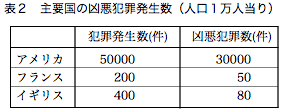
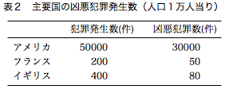
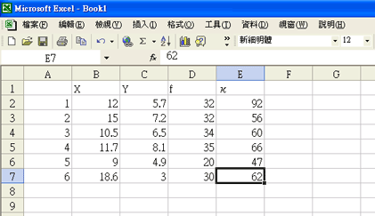
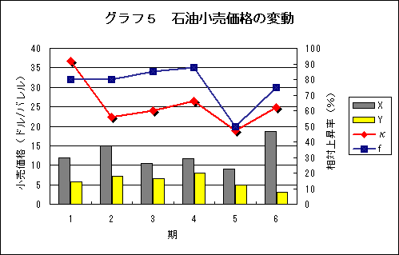
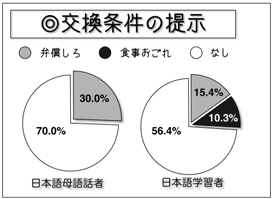
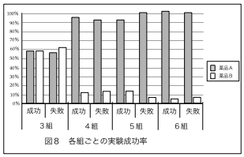
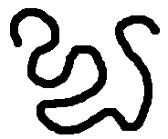
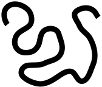

図版について
図版とは
表、グラフ、イラスト、写真、地図など、視覚的に情報を表現するものをまとめて「図版」という。
図版は、文字（文章）では表わしにくい内容を効果的に表現することができる。
図版の種類
論文でよく用いられる図版は、表、グラフ、イラストである。グラフとイラストは、あわせて図と呼ぶこともある。
図版の作り方
図版は、コンピュータで作るのが便利である。なお、レポートでは文字の色は、すべて黒にするが、図版 では（必要があれば）カラーでも構わない。
表
一般的なワープロソフトには、作表機能があり、表を作ることができるようになっている。また、横罫線を引くだけの簡単な表であれば、作表機能を使わなくても作ることができる。


↑枠線のある表(左)と横罫線だけのシンプルな表(右)↑
グラフ
表計算（スプレッドシート）ソフトには、入力されたデータからグラフを作成する機能がある。表計算（スプレッドシート）ソフトで作成したグラフは、ワープロソフトなどに貼付け（ペースト）をして使うことができる。


↑表計算ソフトのデータ入力(左)と表計算ソフトで作成したグラフ(右)↑
また、グラフ作成専用のソフトやドローソフト（ベクターツール）を使って描画してもよいだろう。


↑ドローソフトを使って作成したグラフ↑
グラフを作成する要領や注意点については、下記のウェブページがわかりやすい（※ただし、内容は日本人の中学生向け）。
イラスト
イラストはドローソフトを使って描画するのがよいだろう。MS Wordなどに付属する作図機能は、データに汎用性のない場合があるので、あまり使わない方がよい。また、イラストでは、ペイントソフトを使用してもよいが、紙に印刷する場合は300dpiくらいの解像度が必要になる。
ドローソフトとペイントソフト
| 扱うデータ | 特徴 | 主な用途 | 代表的なソフト |
| ドロー | ベクトル画像（ベクター）
画像を数学的な情報で表現 | 画像が解像度に左右されない | 図表やイラストの作成 | Adobe Illustrator/Inkscape |
| ペイント | ビットマップ画像（ラスター）
画像を点の集合として表現 | 手描きとほぼ同様に操作可能 | 写真の修整・画像作成 | Adobe Photoshop/GIMP |


↑ペイントソフトによる曲線(左)とドローソフトによる曲線(右)↑
→拡大⇒
↑ペイントソフトによる拡大(左)とドローソフトによる拡大(右)↑
レポートでの図版の使用
図版は、文字（文章）では表わしにくい内容やわかりにくい内容を表現するために用いられるものである。
レポートでは、論述や説明のために必要な図版だけを使うようにする。レポートの枚数を増やすために不必要な図版を（大量に）掲載するなどしてはいけない。レポートの内容にまったく関係のないキャラクタの絵を載せることなどは論外である。
通し番号
レポートで図版を使うときには、必ず種類ごとの通し番号をつけるようにする。
通し番号の付け方（例）
図１ → 図２ → 図３
グラフ１ → グラフ２ → グラフ３
表１ → 表２ → 表３
写真１ → 写真２ → 写真３
 ※ここでは、グラフと図（イラスト）を区別しているが、グラフは図に含めてもよい。
※ここでは、グラフと図（イラスト）を区別しているが、グラフは図に含めてもよい。
なお、長い論文や図版の多いレポートでは、章ごとの通し番号にすることもある。その場合は、３章の図４なら「図3-4」のようになる。
図版のタイトル
それぞれの図版には、通し番号だけでなくタイトルをつけた方がよい。
タイトルは、図版が示している内容を端的に表わすもの（簡潔で明確なもの）にしなければならない。
図版の通し番号とタイトルは、図版の上または下にはっきりと書く。なお、表やグラフの場合は上に書くことが多いが、写真や図の場合は下に書くこともある。
図版を示す表現
図版の説明
レポートで図版を使うときには、図版が何を示しているのかを本文で説明するようにする。レポートの本文で図版について述べるときには、図版を通し番号で指す。たとえば、次のように書けばよい。
- ３年生の各クラスの基本データを表７に示す。
- 表７に３年各クラスの基本データを示す。
- 表７に３年各クラスの基本データを示した。
- 表７に３年各クラスの基本データを示しておく。
- ３年生の各クラスの基本データを示したものが表７である。
- 表３は、2005年と2006年の日本語能力試験合格者数を示したものである。
- 表３は、日本語能力試験合格者数の推移を示している。
- 2005年と2006年の日本語能力試験合格者数は、表３に示した通りである。
- 表３から明らかなように、日本語能力試験合格者数は2006年になって急増している。
- 図２に示したように、凶悪犯罪の処罰は、逮捕、起訴、死刑の順で行なわれる。
- 凶悪犯罪の処罰は、逮捕、起訴、死刑の順で行なわれる（図２）。
- 凶悪犯罪の処罰は、図２のようにまとめることができる。
- 図２は、凶悪犯罪の処罰プロセスを図示したものである。
- グラフ３は、アメリカにおける地域ごとの凶悪犯罪発生数を示している。
- グラフ３は、アメリカでの凶悪犯罪発生数の変化を示したものである。
- アメリカでの凶悪犯罪は、『地域１』に分類される地域で急増しているのである（グラフ３参照）。
- グラフ３から分かるように、アメリカでの凶悪犯罪は、『地域１』に分類される地域で急増している。
なお、図版を説明する表現は、図版の性質によって以下のように使い分ける。
- すべて自分でつくったもの
-
- 図☆に…を示す。
- 図☆に…を示した。
- 図☆に…を示しておく。
- …を図☆に示す。
- 図☆は…を示している。
- 図☆は…を示したものである。
- …を示したものが図☆である。
- 全部または一部を他から借りたもの
-
- 図☆は…を示している。
- 図☆は…を示したものである。
- …を示したものが図☆である。
図版の出典